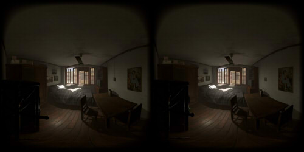

2019/03/07 Update.
2019/01/13 Update.
下の画像をクリックすると、WebVR表示になります。
Oculus GoのFirefoxのWebVRとして動画(mp4)を再生することができます。
Oculus Goの標準ブラウザでは動作しません。
Oculus Goでは、ファイルをダウンロードして内部ストレージからVR180として見たほうが確実です。
| Rendering |
Unity 2018.3 |
| Resolution |
4096 x 2048 pixel |
| Panorama |
VR180 / Side by Side |
| IPD |
64mm |
左右を向いた場合の視差を考慮。
フレーム間の補間なし。
カメラの平行移動でガタつく。
 Download (Google Photosへ)
Download (Google Photosへ)
フレーム間の補間あり。
ブラーがかかってガタつきは緩和される。
Download (Google Photosへ)
2019/01/26 Update.
| Rendering |
Unity 2018.3 |
| Resolution |
4096 x 2048 pixel |
| Panorama |
VR180 / Side by Side |
| IPD |
64mm |
下の画像をクリックすると、WebVR表示になります。
Mirage Cameraで撮影したオリジナル（一部、ぼかしを入れてます）。
Mirage Cameraで撮影したVR180静止画を、VR180 Render(UnityのAsset)で色調整。
Affinity Photoでシャープネスを適用させたもの。
2019/03/07 Update.
| Rendering |
Unity 2018.3.5 |
| Resolution |
5760 x 2880 pixel |
| Panorama |
VR180 / Side by Side |
| IPD |
64mm |
「
asia-Pacific Common Residential Theme Pack」のAssetを使用し、
HDRPのシーンをVR180としてレンダリングしてみました。
以下、VR180カメラのような2つの魚眼からのレンダリング。
左右を向いた場合、視差がなくなり現実とは離れて大きく見えます。

Download
以下、左右を向いた場合の視差も確保したレンダリング。
Download
{kind=link}
{kind=link}